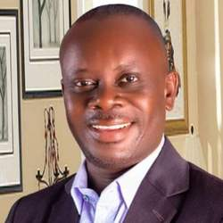

Head of Department
HOD For Data Science

Dr. Uduak D. George
Head of Department
2025 – Present
The people leading and teaching in the Department of Data Science.
Prof. Udoinyang G. Inyang is a pioneer lecturer in the Department of Data Science with a strong background in soft computing, data mining, and knowledge discovery.
Dr. Uduak D. George is the current Head of Department with research interests in soft computing and machine learning. He leads the department's vision and academic development.

Dr. Samuel S. Udoh is a pioneer lecturer in the Department of Data Science with research interests in computational intelligence and knowledge engineering. He has led curriculum development and mentored numerous students.

Mr. Emmanuel Ambrose Dan is an Assistant Lecturer with academic expertise in computer science and practical experience in data science teaching and support.
| Name | Tenure |
|---|---|
| Dr. Samuel S. Udoh (Pioneer) | 2023 – 2025 |
| Dr. Uduak D. George (Current) | 2025 – Present |